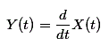
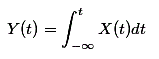

Basic Signal Operations
Properties of systems
Causal System
Linear Time Invariant System
Amplitude Scaling of Signals
Addition of Signals
Multiplication of Signals
Differentiation of Signals
Integration of Signals
Basic Signal Operations Performed on Dependent Variables
Time Scaling of Signals
Reflection of Signals
Time Shifting of Signals
A signal, comprises of a set of information expressed as a function of any number of independent variables, that can be given as an input to a system, or derived as output from the system, to realize its true practical utility. The signal we derive out of a complex system might not always be in the form we want, ∴ being well acquainted with somebasic signal operations may come really handy to enhance the understandability and applicability of signals.
The mathematical transformation from one signal to another can be expressed as
Y(t) = TX(t) ; where Y(t) represents the modified signal derived from the original signal X(t), having only one independent variable t.
The basic set of signal operations can be broadly classified as below.
Basic Signal Operations Performed on Dependent Variables
In this transformation, only the quadrature axis values are modified i.e magnitude of the signal changes, with no effects on the horizontal axis values or periodicity of signals like.
1) Amplitude scaling of signals.
2) Addition of signals.
3) Multiplication of signals.
4) Differentiation of signals.
5) Integration of signals.
Let us look into these types in details.
Amplitude Scaling of Signals
Amplitude scaling is a very basic operation performed on signals to vary its strength. It can be mathematically represented as Y(t) = α X(t).
Here α is the scaling factor, where:-
α<1 → signal is attenuated.
α>1 → signal is amplified.
Basic Signal Operation
This is illustrated in the diagram, where the signal is attenuated when α = 0.5 in fig (b) and amplified when α = 1.5 as in fig (c).
Addition of Signals
This particular operation involves the addition of amplitude of two or more signals at each instance of time or any other independent variables which are common between the signals. Addition of signals is illustrated in the diagram below, where X1(t) and X2(t) are two time dependent signals, performing the additional operation on them we get,
Y(t) = X1(t) + X2(t)
Addition of Signal
Multiplication of Signals
Like addition multiplication of signals also falls under the category of basic signal operations. Here multiplication of amplitude of two or more signals at each instance of time or any other independent variables is done which are common between the signals. The resultant signal we get has values equal to the product of amplitude of the parent signals for each instance of time. Multiplication of signals is illustrated in the diagram below, where X1(t) and X2(t) are two time dependent signals, on whom after performing the multiplication operation we get,
Y(t) = X1(t) X2(t)
Multiplication of Signal
Differentiation of Signals
Differentiation of Signal

Differentiation of a standard square and sine wave is shown in the figure below.
Integration of Signals
Like differentiation, integration of signals is also applicable to only continuous time signals. The limits of integration will be from − ∞ to present instance of time t. It is mathematically expressed as,

Integration of some continuous time signals is shown in the diagram below.
Basic Signal Operations Performed on Dependent Variables
This is exactly the opposite of the above mentioned case, here the periodicity of the signal is varied by modifying the horizontal axis values, while the amplitude or the strength remains constant. These are:-
1) Time scaling of signals
2) Reflection of signals
3) Time-shifting of signals.
Let us look into these operations in details.
Time Scaling of Signals
Time scaling of signals of signals involves the modification of a periodicity of the signal, keeping its amplitude constant. Its mathematically expressed as, Y(t) = βX(t)
where X(t) is the original signal, and β is the scaling factor.
If β > 1 implies, the signal is compressed. And
β < 1 implies, the signal is expanded. This is illustrated diagrammatically for better understanding.
Time Scaling of Signal
Reflection of Signals
Reflection of signal is a very interesting operation applicable on both continuous and discrete signals. Here in this case the vertical axis acts as the mirror, and the transformed image obtained is exactly the mirror image of the parent signal.
It can be defined as Y(t) = X( - t) where X(t) is the original signal.
But if the reflected signal X( - t) = X(t) ; then its called an even signal.
Whereas when X( - t) = − X(t) ; then its known as an odd signal.
Its explained diagrammatically as,
Reflection of Signal
Time Shifting of Signals
Time shifting of signals is probably the most important one, and most widely used amongst all basic signal operations. Its generally used to fast-forward or delay a signal, as is necessary in most practical circumstances. Time shifting is mathematically expressed as,
Y(t) = X(t - t0).
Where X(t ) is the original signal, and t0 represents the shift in time.
For a signal X(t) if the position shift t0> 0. Then the signal is said to be right shifted or delayed.
In the same manner, if t0< 0, implies the signal is left shifted or delayed. This has been explained diagrammatically in the figure below. Where the original signal fig(a) is right shifted and also left shifted in figure (b) and (c) respectively.
Time Shifting of Signal
 by
by {kind=link}